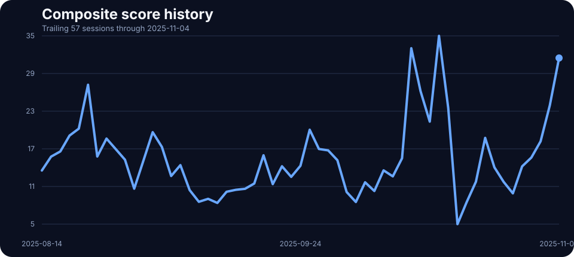
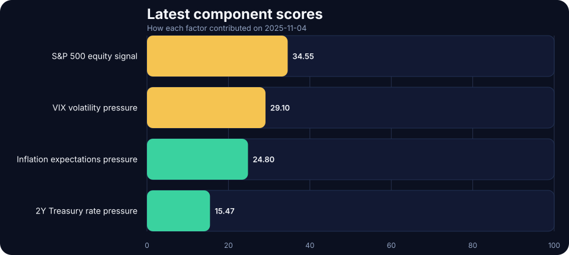

2025-11-04 TACO Pressure Index Update: Elevated at 31.37
The index is designed to approximate how market stress can build pressure for a softer policy posture. On 2025-11-04, the score printed 31.37/100 in the elevated regime, with equity stress and front-end rate pressure doing most of the work.
Fresh macro pressure read for 2025-11-04: the TACO Pressure Index closed at 31.37/100, signaling a elevated pressure regime as equity stress and front-end rate pressure shaped the daily read. Includes charts, a component breakdown, and a narrative summary.
Pressure history

Latest component scores

Today’s component breakdown
S&P 500 equity pressure
34.64/100
Bigger equity drawdowns imply more stress.
2Y Treasury rate pressure
33.07/100
Rates pressure reflects both the current 2Y level and any fresh 5-session rise.
VIX volatility pressure
30.98/100
Higher implied volatility usually means greater market stress.
Inflation expectations pressure
26.80/100
Inflation pressure reflects both the breakeven level and any fresh 5-session rise.
Method in one paragraph
The TACO Pressure Index converts four live market inputs into 0–100 pressure scores and averages them into a composite reading. Equity pressure still comes from 5-session S&P 500 drawdowns, while rates, inflation, and volatility now combine a level component with a 5-session change component. That keeps the index focused on pressure, not just short-term momentum, before grouping the result into LOW, ELEVATED, HIGH, and EXTREME regimes.